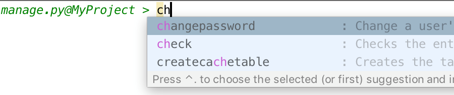

The easiest way to run a utility of the manage.py task is to choose Run manage.py Task in the Tools menu, or press &shortcut:Django.RunManageTaskAction;.
As you type the name of the utility you want to run, the lookup list shrinks to show the matching entries only.
